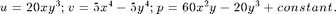
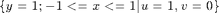

Project: MAC Scheme for Stokes Equations
The purpose of this project is to implement the simple and popular MAC scheme for solving Stokes equations in two dimensions. The instruction can be found Progamming of MAC for Stokes equations
Contents
Test Example
- Analytic solution. We use a simple model of colliding flow with analytic solutions to test the code. The domain is [-1,1]^2 and the analytic solution is:

Compute the data f and Dirichlet boundary condition g_D.
- Driven cavity problem. The domain is [-1,1]^2. Stokes equation with zero Dirichlet boundary condition except on the top:

Step 1: Gauss-Seidel relaxation of velocity
Given a pressure approximation, relax the momentum equation to update velocity. See Multigrid project on the matrix free implemenation of G-S relaxation. Note that the boundary or near boundary dof should be updated diffeently. The stencil should be changed according to different boundary conditions.
Step 2: Distributive relaxation of velocity and pressue
- form the residual for the continuity equation: rc = div u.
- solve the Poisson equation for pressure Ap*dq = rc by one G-S.
- distribute the correction to velocity by u = u + grad dq;
- update the pressure by p = p - Ap*dq;
Every step can be implemented in a matrix-free version; see Progamming of MAC for Stokes equations
Use DGS as an iterative method to solve the Stokes equation. The iteration steps could be very big but make sure it converges.
Step 3: Two level method
The two level method is
- Presmoothing by DGS
- form residual for momentum and continunity equation
- restrict the residual to the coarse grid
- call DGS in the coarse grid till converge
- prolongate the correction to the fine grid
- Postsmoothing by DGS
Note: the index map between coarse and fine grids are slightly different for u,v,p; see Progamming of MAC for Stokes equations
Plus presmoothing and one postsmoothing using DGS, you get two level methods. Test your two level methods for different levels. It should convergence in less than 20 steps and indepedent of the number of levels.
Step 4: Vcycle multigrid method
Recrusively apply the two-level method to the coarse grid problem in the previous step to get a V-cycle method.
- Test the convergence of Vcycle method. Namely the iteration steps to push the relative residual smaller than a tolerance.
- Compute the error between computed approximation to the exact solution and show the convergence rate in terms of mesh size h.